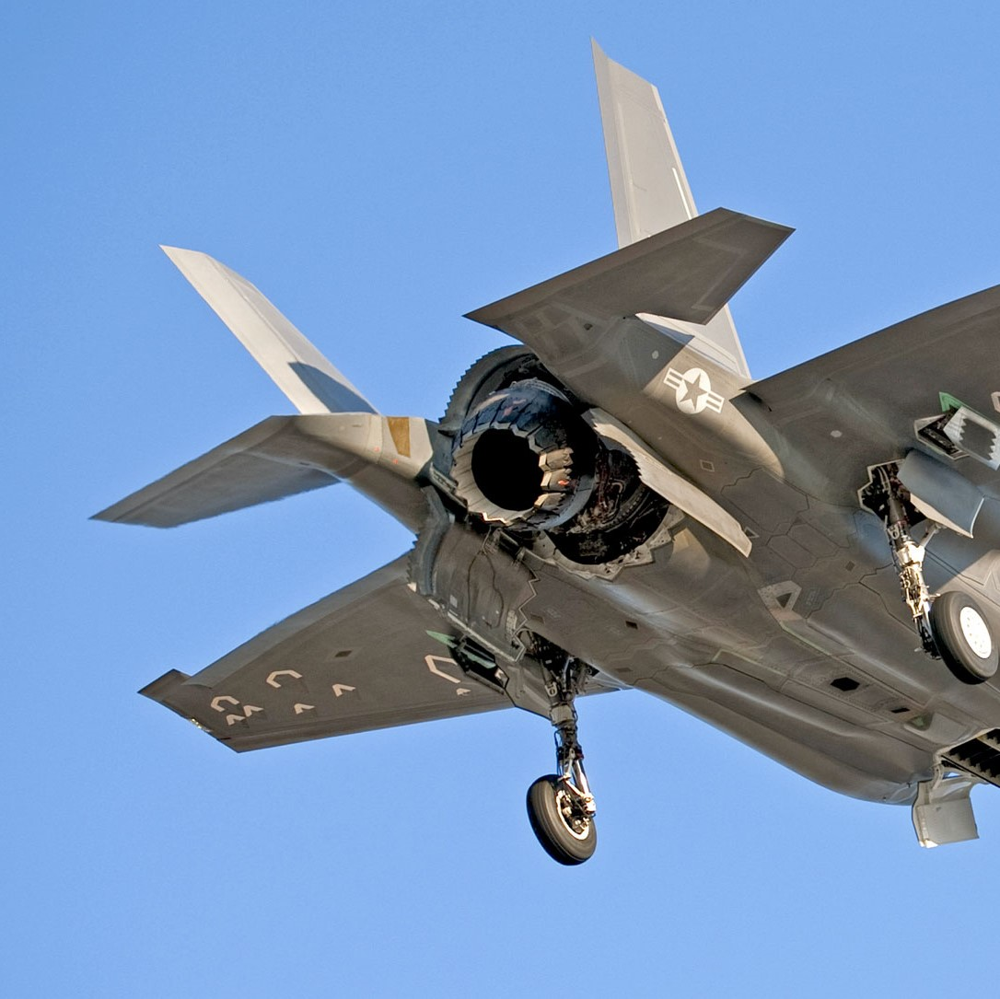

ES4F5 Gas Turbine Equipment
March 2020
Assignment
The convergent-divergent nozzle (con-di nozzle) consists of the pairing of a convergent nozzle and a divergent nozzle used for propulsion in a jet engine. Con-di nozzles are normally used for aircraft requiring supersonic, high Mach number speeds [1] with large pressure ratios [2]. Therefore they are employed by military aircraft with higher speed demands as an increase in thrust is provided, improving the thrust to weight ratio but with the detriment of increased fuel consumption, weight and cost [1]. In this report the con-di nozzle functions will be analysed: pressure control for optimum performance, conversion of potential energy of exhaust gas to kinetic energy. Also focussing on thrust minus drag performance, variable geometry control, thrust vectoring and military applications. The state of art will be discussed by analysis of the propelling nozzle of the Lockheed Martin F-35B Lightning II STOVL variant with outstanding aerodynamic performance, stealth and supersonic speeds [3].
To read the full assignment click here. 